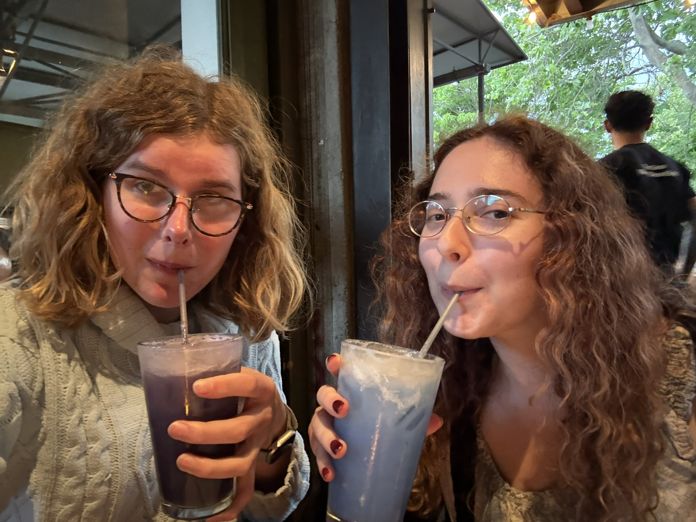
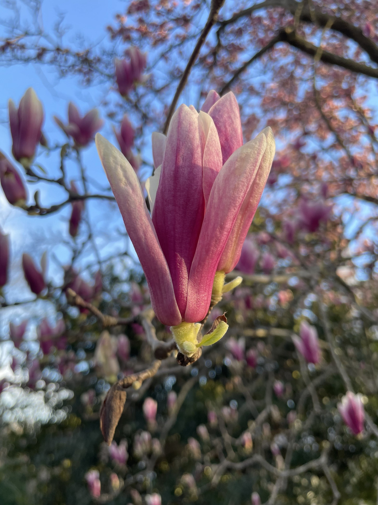
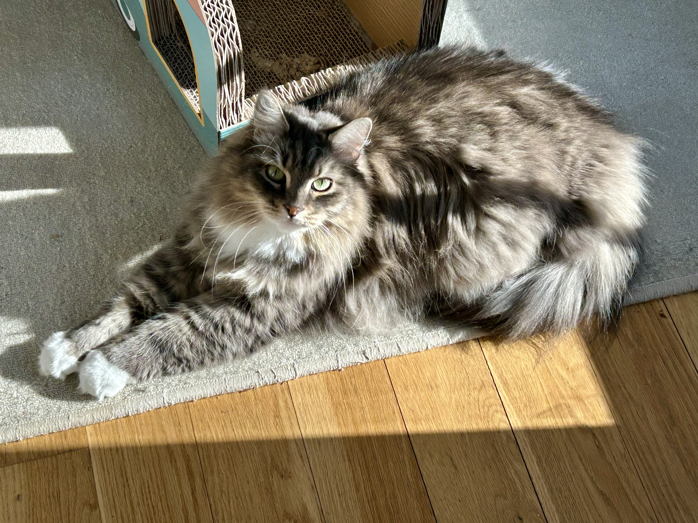
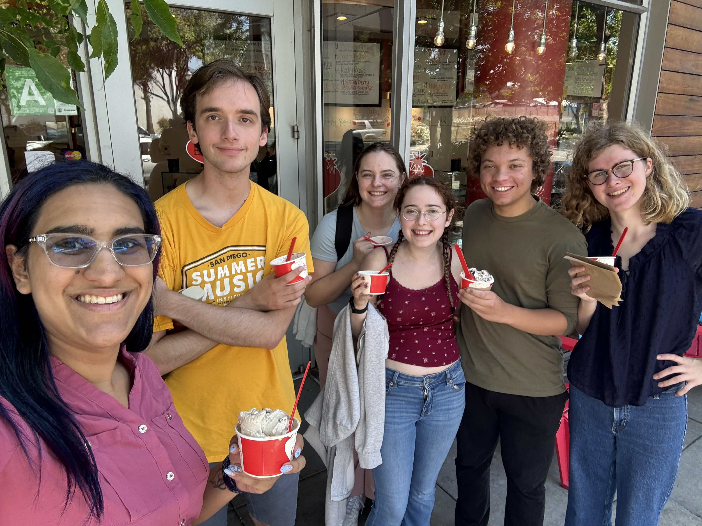

Hi, I'm Cameron! I'm a rising junior at Harvey Mudd College studying CS and Math. I grew up in Northern Virginia, so now my favorite things include urban planning, summer thunderstorms, and good guacamole. (Only the really really good guacamole. I'm very picky about it.) My day-to-day interests include coding, talking about DnD, and excitedly thinking about how good sad music is.
About Me
Click an image to learn a little more about me :)



Get to know me better:

Cats
Did you know I really like cats?? Well, if you didn't, you're about to. (I mean it. Look at my cats.)

Media
I am completely normal about character development, and show tunes, and sad music, and cartoons, and-

Hobbies
Assorted other obsessions. I mean, um, hobbies. Also, friends! I like friends. Also, travel! Traveling is the best.